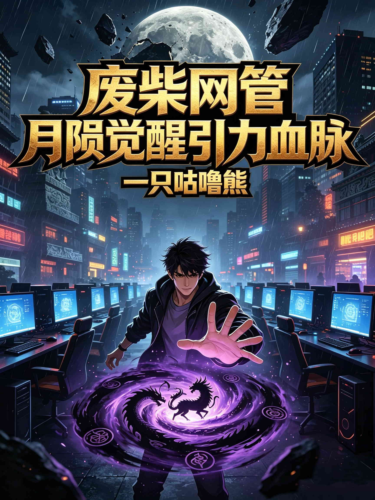

废柴网管，月陨觉醒引力血脉
被分手后，我在三星堆捡到月球碎片，觉醒上古血脉

26 岁的初中辍学 IT 网管潇亮，被分手后到成都三星堆散心，意外在鸭子河捡到一块黑色月球碎片，从此觉醒引力控制与超强学习能力。他一边在都市中扮猪吃老虎，一边沿着《周易》《山海经》等古籍线索，揭开上古天人族、不周山与大洪水的真相。
章节目录
- 第 1 章 鸭子河的碎片 潇亮是在电话里被分手的。 女友林晓的声音很平静，平静得像在通知他快递到了。她说：“潇亮，我们算了吧。我不是嫌你穷，我是嫌你……没有未来。” 潇亮握着手机，站在公司楼梯间里。身后是十八楼的高空，风从窗户缝钻进来，吹得他后颈发凉。他想说什么，喉……
- 第 2 章 京都透明人 回京都的高铁上，潇亮把背包抱在胸前，一路上都没怎么睡。 不是因为火车晃。是因为只要他闭上眼睛，就能感觉到那块碎片的存在。它就在背包最里层，隔着两层布料和一本泡皱的《周易》，发出一种若有若无的“重量”。那重量不是物理上的压迫，而是一种更深的东……
- 第 3 章 电梯里的重量 潇亮一夜没睡，但早上七点还是准时睁开了眼睛。 他不是自然醒的。他是被“重量”压醒的。 不是他身体的重量，而是周围所有东西的重量。床、被子、枕头、床头柜上的水杯、墙外的空调外机、楼上邻居走来走去的脚步声、甚至楼下早点摊那口油锅里的油条……所有……
- 第 4 章 看得懂的周易 潇亮一整晚都没怎么睡。 那个穿黑色风衣的男人像一枚钉子，钉在他的脑子里。他反复回想那个人的眼神——平静、审视，带着一种看猎物似的笃定。 那不是普通人。 普通人不会在和你对视一眼后，微微一笑就转身离开。普通人也不会让他的后背在一瞬间冒出冷汗。……
- 第 5 章 学神网管 潇亮是被电话吵醒的。 凌晨四点十七分，屏幕上跳动着刘主管两个字。他盯着那两个字看了三秒，才接起来。 “潇亮，公司核心交换机挂了，整个十八楼断网，你赶紧滚过来。”刘主管的声音又急又怒，像是在命令一条狗。 “现在？”潇亮的声音还带着睡意。 “废……
- 第 6 章 同学会的角落 刘主管被抓的第三天，潇亮收到了同学聚会的通知。 微信群里，班长热情洋溢地写着：同在一座城为什么不见面，定于本周六晚七点，锦江酒店 888 包厢，人均 288，不见不散。 潇亮本想装死。 他对同学聚会没什么好感。那帮人在读书时就喜欢拿他的成绩……